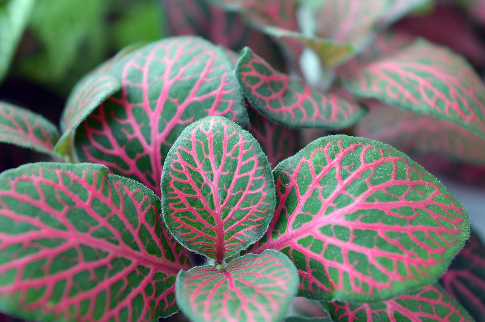

RePlantear
Para plasmar tus proyectos vegetales en tierra firme

La luz, el suelo, el agua, los bichos y muchas otras cosas pueden ser un obstáculo en la salud
de tu planta.

Vení a conocer otras grandes ayudas para la salud de tus plantitas